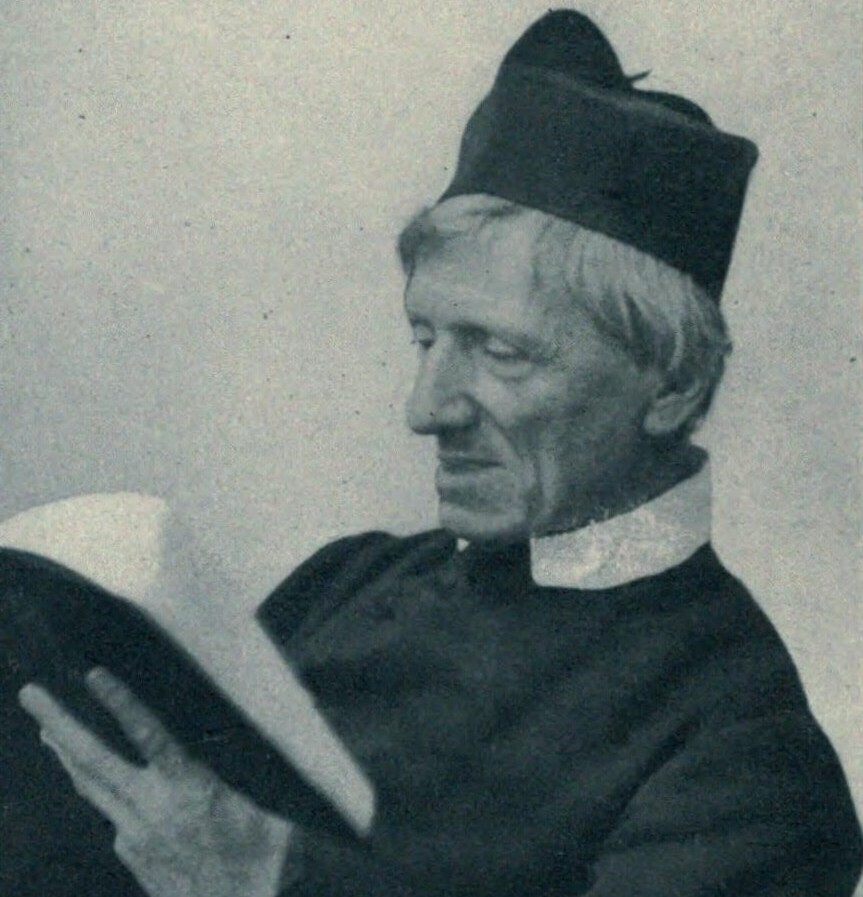
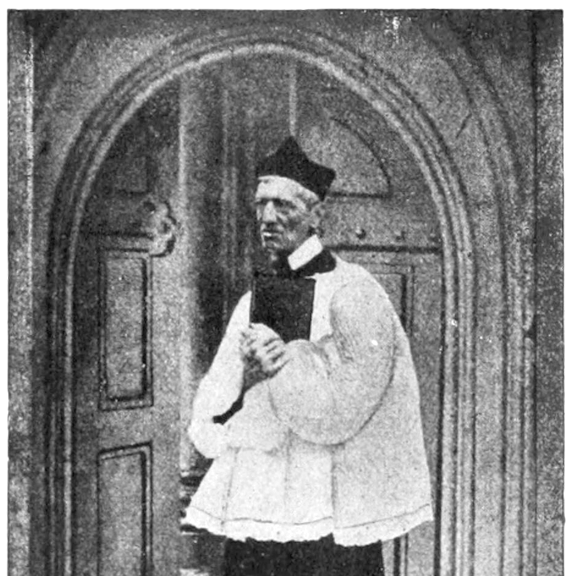
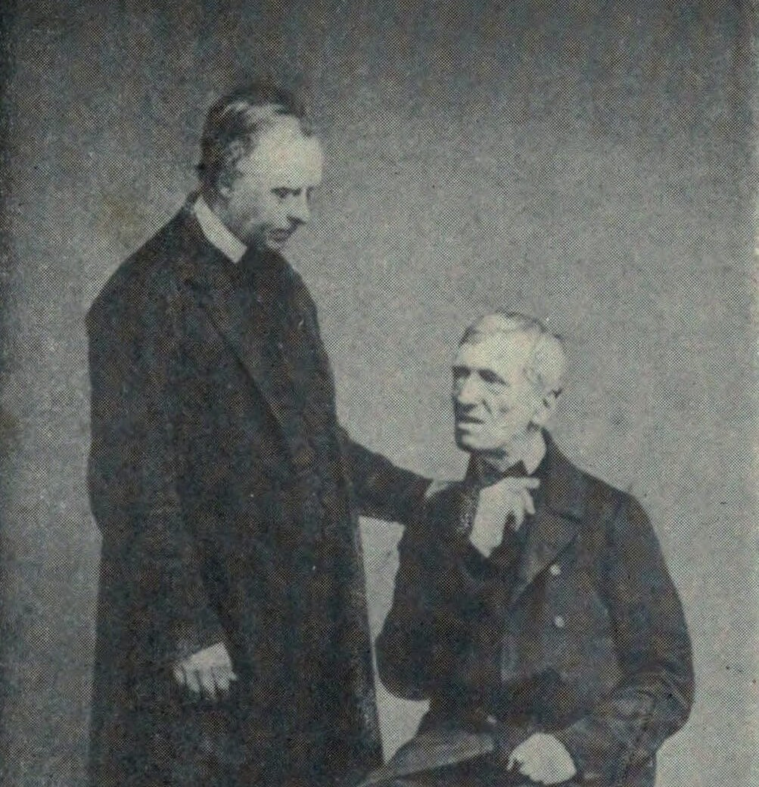

Infância Londrina — Entre o Comércio e a Fé
John Henry Newman nasceu em 21 de fevereiro de 1801 em Londres. Filho de um banqueiro, foi educado na tradição anglicana. Aos 15 anos, sob a influência de um mentor calvinista, viveu uma conversão profunda. Este evento, que ele descreveu como "mais real para mim do que as minhas mãos e pés", instalou nele a convicção de que Deus era o centro da realidade. Em 1817, ingressou no Trinity College, em Oxford — centro intelectual do Império. Ordenado clérigo em 1824, assumiu a vigararia de Santa Maria em 1828, onde suas pregações começaram a transformar a vida espiritual dos estudantes.
O Movimento de Oxford — A Recuperação da Tradição
Na década de 1830, o anglicanismo parecia vacilar frente ao secularismo. Newman, com Keble e Pusey, liderou o Movimento de Oxford. Eles argumentavam que a Igreja da Inglaterra não era uma criação do Parlamento (como um braço do Estado), mas um ramo da Igreja Católica universal. Publicaram os Tracts for the Times, defendendo que a autoridade da Igreja residia na Tradição apostólica e nos Sacramentos.
O ponto de ruptura foi o Tract 90 (1841). Newman tentou demonstrar que os Trinta e Nove Artigos anglicanos podiam ser lidos em harmonia com os dogmas católicos. A interpretação causou um furor nacional. Bispos ingleses exigiram a suspensão dos panfletos; Newman percebeu, com dor, que a Igreja da Inglaterra rejeitava a sua própria identidade católica histórica.
Littlemore — O Laboratório da Consciência
Retirado em Littlemore, Newman viveu anos de ascese e leitura dos Padres da Igreja. Foi lá que ele resolveu sua grande angústia intelectual: ele percebeu que a Igreja primitiva — a de Santo Atanásio e Santo Ambrósio — era, em essência, a Igreja Católica Romana. Sua obra, "Ensaio sobre o Desenvolvimento da Doutrina Cristã", foi o fruto final deste período. Ele provou que a doutrina não "muda", mas "cresce" e se explicita com o tempo, assim como a vida humana.
A Conversão — O Custo da Verdade
Em 9 de outubro de 1845, Newman converteu-se ao catolicismo. A transição foi radical: perdeu a carreira acadêmica, o apoio da família (sua irmã Harriett nunca o perdoou) e o conforto de um ambiente que amava. O impacto social foi tamanho que sua conversão foi descrita como um "terremoto" na Inglaterra vitoriana. Ele provou, com sua vida, que a consciência individual, quando educada na verdade, deve ser seguida mesmo ao preço do ostracismo social.
A Educação como Missão — "A Ideia de uma Universidade"
Um ponto frequentemente esquecido é sua atuação em Dublin. Em 1852, Newman escreveu "A Ideia de uma Universidade", obra que ainda hoje molda o ensino superior ocidental. Ele defendia que a universidade não deveria ser apenas um centro de treinamento técnico, mas um lugar onde todas as áreas do conhecimento (incluindo a Teologia) convivem para formar o homem completo. Para Newman, a educação liberal é a chave para a liberdade da mente.
Cardeal — O Reconhecimento da Fé na Razão
Em 1879, o Papa Leão XIII nomeou-o Cardeal, dando-lhe o título de "meu cardeal". A sua escolha do lema "Cor ad cor loquitur" ("O coração fala ao coração") definiu sua teologia: Deus não se revela em fórmulas áridas, mas através do encontro pessoal. Newman desafiou o racionalismo puro do seu tempo, mostrando que o homem chega à fé não apenas por silogismos, mas por uma percepção profunda da realidade, o que ele chamava de "illative sense" (o sentido ilativo).
O Legado — O "Pai" do Vaticano II
Newman morreu em 1890. Sua visão sobre a consciência — frequentemente mal interpretada como "fazer o que se quer" — era, para ele, "a voz do Legislador" na alma humana. O Concílio Vaticano II não teria a mesma profundidade sem a sua teologia sobre o desenvolvimento doutrinal e o papel dos leigos. Canonizado em 2019, ele é hoje o patrono daqueles que, em um mundo de incertezas, não têm medo de usar a razão e a fé para buscar a verdade, não importando para onde ela
89 anos de vida — de Oxford anglicana ao cardinalato católico 21 Fev 1801 Nasce em família anglicana de classe média. Aos 15 anos, durante uma doença, vive uma intensa experiência de conversão evangélica. 1822 – 1828 Eleito fellow do Oriel College. Ordenado clérigo anglicano e nomeado vigário de Santa Maria, em Oxford — púlpito que o torna famoso. 1833 – 1841 Lidera o Movimento Tractariano, buscando restaurar as raízes católicas do anglicanismo. Escreve a maioria dos Tracts for the Times. 1841 Publica o controverso Tract 90, gerando condenação pública de bispos anglicanos. Marca o início de sua crise espiritual mais profunda. 1842 – 1845 Retira-se para Littlemore em retiro e estudo. Escreve o "Ensaio sobre o Desenvolvimento da Doutrina Cristã", que o conduz logicamente a Roma. 9 Out 1845 É recebido na Igreja Católica em Littlemore aos 44 anos. Perde posição, amigos e reputação — mas nunca hesita na decisão. 1847 – 1890 Ordenado padre católico em Roma. Funda o Oratório de São Filipe Néri em Birmingham, onde vive os quarenta e três anos restantes de sua vida. 1864 Escreve sua autobiografia espiritual em resposta a um ataque público. A obra restaura definitivamente sua reputação intelectual. 1879 Elevado ao cardinalato pelo Papa Leão XIII aos 78 anos. Escolhe o lema "o coração fala ao coração" — síntese de toda sua espiritualidade. 13 Out 2019 Canonizado pelo Papa Francisco em Roma — o primeiro grande intelectual inglês moderno declarado santo, precursor de temas do Vaticano II.Linha do Tempo
Nascimento em Londres
Oxford e ordenação
Movimento de Oxford
Tract 90 e escândalo
Littlemore — a "longa doença"
Conversão ao catolicismo
Oratório de Birmingham
Apologia Pro Vita Sua
Cardeal — "Cor ad cor loquitur"
Canonização
Milagres Aprovados
Os prodígios reconhecidos pela Igreja para sua beatificação e canonização
01
Estados Unidos
Cura de Jack Sullivan
Jack Sullivan, diácono americano, sofria de uma condição grave na coluna que o deixava paralisado e sem perspectiva de recuperação segundo os médicos. Após orações fervorosas pela intercessão de John Henry Newman, recuperou-se de forma súbita e completa, voltando a andar normalmente. O caso foi investigado e reconhecido pelo Vaticano, habilitando a beatificação em 2010.
Aprovado em 2009 · para a Beatificação02
Chicago, Estados Unidos
Cura de Melissa Villalobos
Melissa Villalobos, mãe de família em Chicago, sofreu uma hemorragia interna grave durante a gravidez que ameaçava sua vida e a do bebê. Após rezar pedindo a intercessão de John Henry Newman, a hemorragia parou instantaneamente e de forma inexplicável pela medicina. O caso foi aprovado pelo Dicastério para as Causas dos Santos, habilitando a canonização pelo Papa Francisco em 2019.
Aprovado em 2019 · para a CanonizaçãoGaleria
Retratos e imagens da vida e do legado de São John Henry Newman




Imagens utilizadas sob licença de seus respectivos autores. Créditos completos disponíveis aqui.
Fontes e Referências
Documentação utilizada para a elaboração deste perfil
Apologia Pro Vita Sua
John Henry Newman · Edições Loyola, 2015
Ensaio sobre o Desenvolvimento da Doutrina Cristã
John Henry Newman · Editora Vide, 2019
John Henry Newman — Uma Biografia
Ian Ker · Oxford University Press, 2009
The National Institute for Newman Studies
Arquivo digital de cartas, sermões e escritos de Newman
Canonização de John Henry Newman — Homilia do Papa Francisco
Santa Sé · 13 de outubro de 2019
Oração por Intercessão de São John Henry Newman
"Luz serena, guia-me, através da noite que me envolve; guia-me tu, Senhor! Escura é a noite e longe estou de casa; guia-me tu, Senhor! Dirige os meus passos; não peço ver o horizonte distante; um passo só me basta agora."
Ó Deus, que escolhestes São John Henry Newman para nos ensinar a buscar a verdade com honestidade e a seguir a consciência com retidão, concedei-nos, pela sua intercessão, a graça de escutar a Tua voz em meio ao ruído do mundo e a coragem de caminhar confiantes sob a Tua luz, até que cheguemos à plenitude da Vossa presença.
Por Cristo, nosso Senhor. Amém.
· Oração baseada na composição "Lead, Kindly Light" de J.H. Newman ·